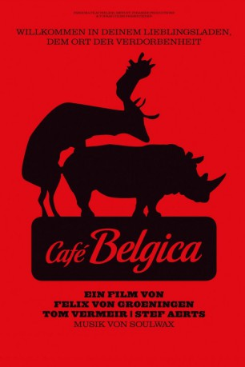
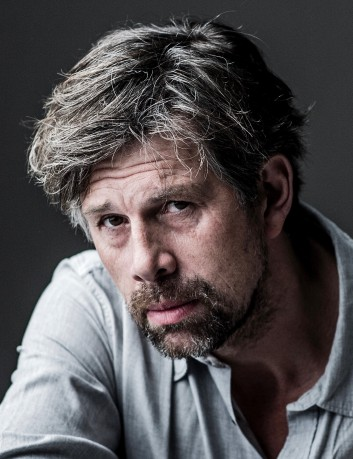

#4670 Café Belgica
 
 IMDB-Wertung: 6.8 / 10
IMDB-Wertung: 6.8 / 10  Metascore: 0
Metascore: 0 
Die Brüder Jo (Stef Aerts) und Frank (Tom Vermeir) könnten unterschiedlicher nicht sein, und so sind sie über die Jahre auseinandergedriftet. Nach einer längeren Funkstille treffen sie sich wieder, als Frank seinen Bruder in dessen Bar besucht und anbietet, auszuhelfen. Frank, dem die geordneten Bahnen seines bürgerlichen Lebens zu langweilig geworden sind, fühlt sich hinterm Tresen schnell wohl und gemeinsam gelingt es den Brüdern, aus dem heruntergekommenen „Café Belgica“ einen angesagten Treffpunkt für alle Feierwütigen mit Faible für Rockmusik zu machen. Im nahezu ununterbrochenen Partytaumel scheint das Leben wunderbar zu sein, die Musik dröhnt, der Alkohol fließt in Strömen und alle sind gut drauf – doch dann werden die Brüder von der Realität eingeholt, die weitaus härter und anstrengender ist, als jeder Kater. Der Weckruf kommt, als Jos Freundin Marieke (Hélène De Vos) ihm eröffnet, dass sie schwanger ist…
Jahr: 2016
Dauer: 127 Minuten
FSK: 12
Land: Belgien Studio: Pandora Film VerleihTonspuren: DD5.1 - ,
Untertitel: Englisch,
Auflösung: 1080p (1920x808) Größe: 9297 MB
Genre: Drama
Regisseur: Felix van Groeningen
Drehbuch: Mark Krenzien
Soundtrack:
Darsteller:
- Stef Aerts als Jo
- Stefaan De Winter als Ferre
- Boris Van Severen als Tim Coppens
- Charlotte Vandermeersch als Isabelle
- Ignace Paepe als Class mate Bouncer
- Anne Vanoppen als Barvrouw
- Tom Vermeir als Frank
- Dominique Van Malder als Manu Dewaey
- Ben Benaouisse als Momo
- Sara De Bosschere als Nikki
- Hélène De Vos als Marieke
- Jean-Michel Balthazar als André
- Bo De Bosschere als Wibo
- Sam Louwyck als Rodrigo
- Anjana Dierckx als Katrien
- Hannes Reckelbus als Jan
- Silvanous Saow als Rudy Rasta
- Fouad Oulad Khlie als Mohammed
- Arne Sierens als Frederic
-  Johan Heldenbergh als Bruno Schollaert
- Nils De Caster als Inspecteur Dewaele
- Titus De Voogdt als Inspecteur Van Beveren
- Tom Ternest als Piet Symons
- Willy Peeters als Instructeur bewakingsagent
- Ilse De Koe als Verpleegster materniteit
- Iris Van Cauwenbergh als Svetlana
- Zinya Van Reeth als Brenda
- Brit Van Hoof als Grietje
- Greet Verstraete als Carole
- Fathia Assoued als Yamila
- Marijke Pinoy als Diane
- An Vancutsem als Fiona
- Niek Teetaert als Geluidstechnieker
- Anissa Poelman als Girl headbanging in bar , uncredited
Datei: X:\2016(A-F)\Café Belgica (2016, FSK12, 1920x808).mkv seit 02.11.2016
Festplatte: HD 2016(A-Z)
 Es gibt insgesamt 147 Filme in der Gruppe '2016(A-F)'
Es gibt insgesamt 147 Filme in der Gruppe '2016(A-F)'